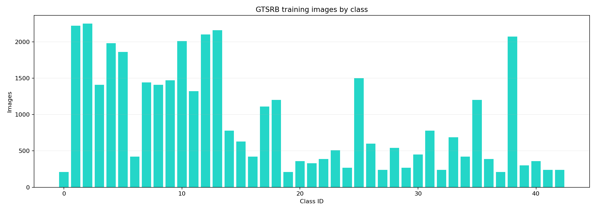
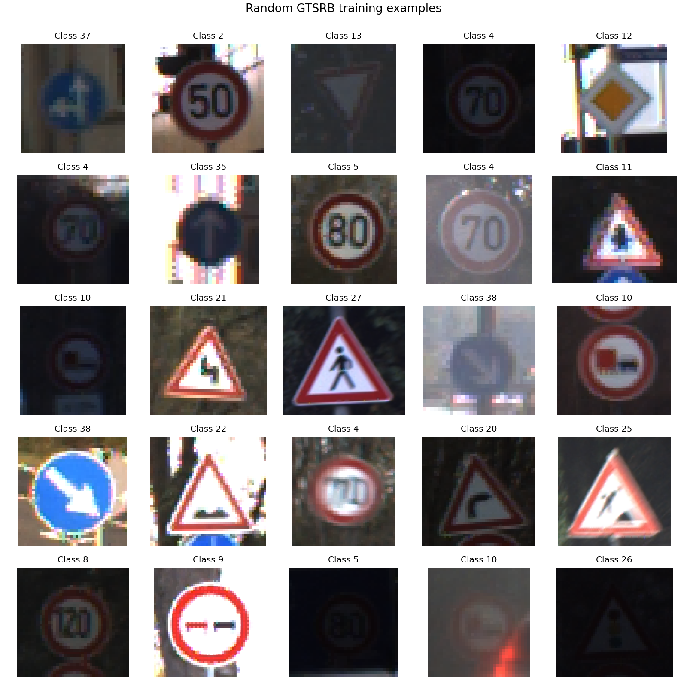
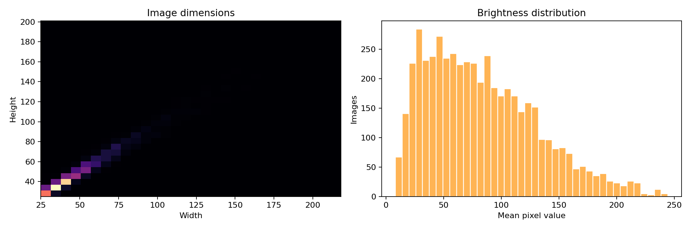
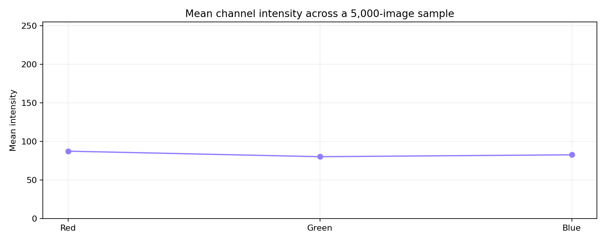
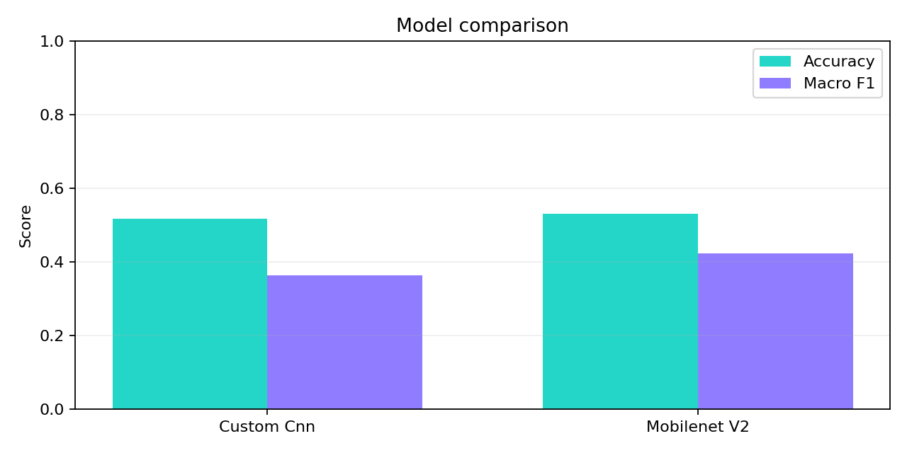
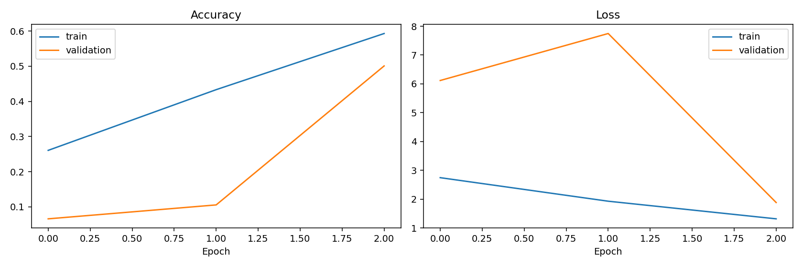
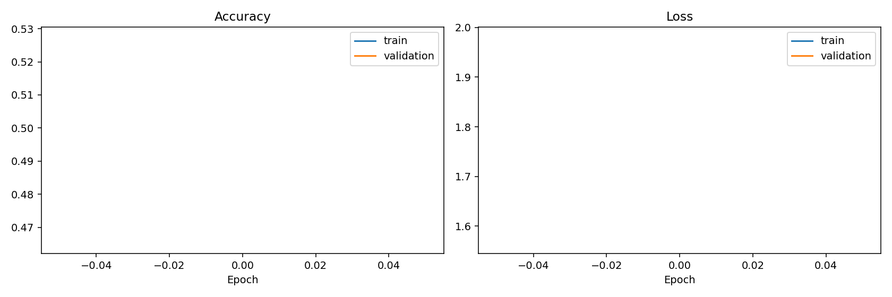
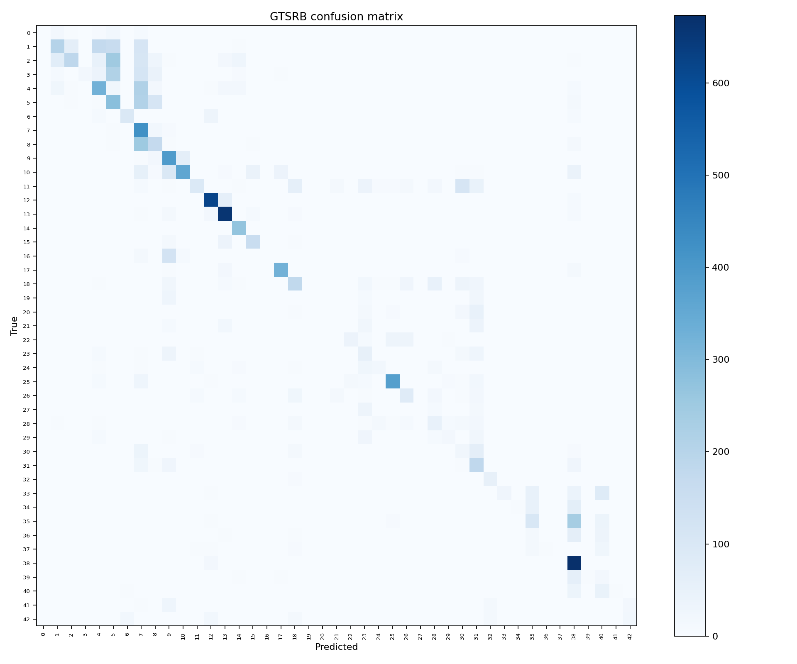
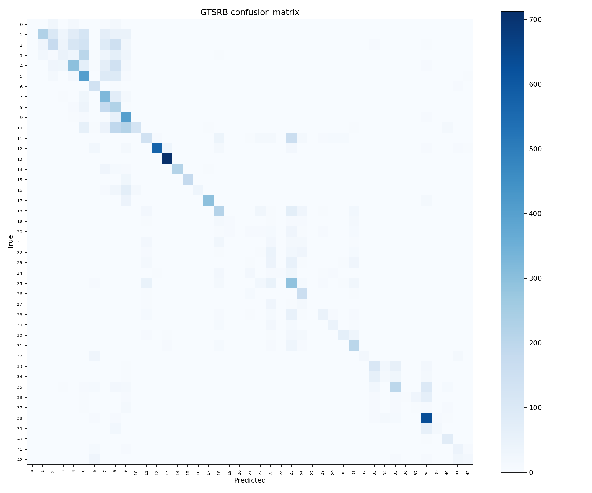

Computer vision project
From road-sign pixels to measurable predictions.
A transparent walkthrough of the German Traffic Sign Recognition Benchmark: data profile, modeling choices, and evaluation evidence.
01 / exploratory analysis
Know the data before training.
These figures are generated directly from the downloaded dataset.




02 / model results
Compare the learned representations.
Both models use the same grouped validation strategy and official test split.





03 / reproducible workflow
The pipeline, end to end.
Acquire
Download the full archive and verify its MD5 checksum.
Explore
Profile classes, dimensions, brightness, and sample imagery.
Train
Fit a custom CNN and MobileNetV2 with augmentation and callbacks.
Evaluate
Report accuracy, macro F1, per-class metrics, and confusion matrices.
Infer
Send one image through the saved model from the command line.